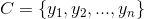
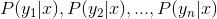
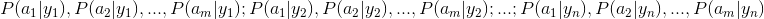
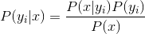
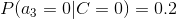

算法杂货铺——分类算法之朴素贝叶斯分类(Naive Bayesian classification)
2010-09-17 13:09 by T2噬菌体, 126073 阅读, 47 评论, 收藏, 编辑0、写在前面的话
我个人一直很喜欢算法一类的东西，在我看来算法是人类智慧的精华，其中蕴含着无与伦比的美感。而每次将学过的算法应用到实际中，并解决了实际问题后，那种快感更是我在其它地方体会不到的。
一直想写关于算法的博文，也曾写过零散的两篇，但也许是相比于工程性文章来说太小众，并没有引起大家的兴趣。最近面临毕业找工作，为了能给自己增加筹码，决定再次复习算法方面的知识，我决定趁这个机会，写一系列关于算法的文章。这样做，主要是为了加强自己复习的效果，我想，如果能将复习的东西用自己的理解写成文章，势必比单纯的读书做题掌握的更牢固，也更能触发自己的思考。如果能有感兴趣的朋友从中有所收获，那自然更好。
这个系列我将其命名为“算法杂货铺”，其原因就是这些文章一大特征就是“杂”，我不会专门讨论堆栈、链表、二叉树、查找、排序等任何一本数据结构教科书都会讲的基础内容，我会从一个“专题”出发，如概率算法、分类算法、NP问题、遗传算法等，然后做一个引申，可能会涉及到算法与数据结构、离散数学、概率论、统计学、运筹学、数据挖掘、形式语言与自动机等诸多方面，因此其内容结构就像一个杂货铺。当然，我会竭尽所能，尽量使内容“杂而不乱”。
1.1、摘要
贝叶斯分类是一类分类算法的总称，这类算法均以贝叶斯定理为基础，故统称为贝叶斯分类。本文作为分类算法的第一篇，将首先介绍分类问题，对分类问题进行一个正式的定义。然后，介绍贝叶斯分类算法的基础——贝叶斯定理。最后，通过实例讨论贝叶斯分类中最简单的一种：朴素贝叶斯分类。
1.2、分类问题综述
对于分类问题，其实谁都不会陌生，说我们每个人每天都在执行分类操作一点都不夸张，只是我们没有意识到罢了。例如，当你看到一个陌生人，你的脑子下意识判断TA是男是女；你可能经常会走在路上对身旁的朋友说“这个人一看就很有钱、那边有个非主流”之类的话，其实这就是一种分类操作。
从数学角度来说，分类问题可做如下定义：
已知集合：和，确定映射规则，使得任意
有且仅有一个
使得成立。（不考虑模糊数学里的模糊集情况）
其中C叫做类别集合，其中每一个元素是一个类别，而I叫做项集合，其中每一个元素是一个待分类项，f叫做分类器。分类算法的任务就是构造分类器f。
这里要着重强调，分类问题往往采用经验性方法构造映射规则，即一般情况下的分类问题缺少足够的信息来构造100%正确的映射规则，而是通过对经验数据的学习从而实现一定概率意义上正确的分类，因此所训练出的分类器并不是一定能将每个待分类项准确映射到其分类，分类器的质量与分类器构造方法、待分类数据的特性以及训练样本数量等诸多因素有关。
例如，医生对病人进行诊断就是一个典型的分类过程，任何一个医生都无法直接看到病人的病情，只能观察病人表现出的症状和各种化验检测数据来推断病情，这时医生就好比一个分类器，而这个医生诊断的准确率，与他当初受到的教育方式（构造方法）、病人的症状是否突出（待分类数据的特性）以及医生的经验多少（训练样本数量）都有密切关系。
1.3、贝叶斯分类的基础——贝叶斯定理
每次提到贝叶斯定理，我心中的崇敬之情都油然而生，倒不是因为这个定理多高深，而是因为它特别有用。这个定理解决了现实生活里经常遇到的问题：已知某条件概率，如何得到两个事件交换后的概率，也就是在已知P(A|B)的情况下如何求得P(B|A)。这里先解释什么是条件概率：
表示事件B已经发生的前提下，事件A发生的概率，叫做事件B发生下事件A的条件概率。其基本求解公式为：。
贝叶斯定理之所以有用，是因为我们在生活中经常遇到这种情况：我们可以很容易直接得出P(A|B)，P(B|A)则很难直接得出，但我们更关心P(B|A)，贝叶斯定理就为我们打通从P(A|B)获得P(B|A)的道路。
下面不加证明地直接给出贝叶斯定理：
1.4、朴素贝叶斯分类
1.4.1、朴素贝叶斯分类的原理与流程
朴素贝叶斯分类是一种十分简单的分类算法，叫它朴素贝叶斯分类是因为这种方法的思想真的很朴素，朴素贝叶斯的思想基础是这样的：对于给出的待分类项，求解在此项出现的条件下各个类别出现的概率，哪个最大，就认为此待分类项属于哪个类别。通俗来说，就好比这么个道理，你在街上看到一个黑人，我问你你猜这哥们哪里来的，你十有八九猜非洲。为什么呢？因为黑人中非洲人的比率最高，当然人家也可能是美洲人或亚洲人，但在没有其它可用信息下，我们会选择条件概率最大的类别，这就是朴素贝叶斯的思想基础。
朴素贝叶斯分类的正式定义如下：
1、设为一个待分类项，而每个a为x的一个特征属性。
2、有类别集合。
3、计算。
4、如果，则
。
那么现在的关键就是如何计算第3步中的各个条件概率。我们可以这么做：
1、找到一个已知分类的待分类项集合，这个集合叫做训练样本集。
2、统计得到在各类别下各个特征属性的条件概率估计。即。
3、如果各个特征属性是条件独立的，则根据贝叶斯定理有如下推导：

因为分母对于所有类别为常数，因为我们只要将分子最大化皆可。又因为各特征属性是条件独立的，所以有：
根据上述分析，朴素贝叶斯分类的流程可以由下图表示（暂时不考虑验证）：

可以看到，整个朴素贝叶斯分类分为三个阶段：
第一阶段——准备工作阶段，这个阶段的任务是为朴素贝叶斯分类做必要的准备，主要工作是根据具体情况确定特征属性，并对每个特征属性进行适当划分，然后由人工对一部分待分类项进行分类，形成训练样本集合。这一阶段的输入是所有待分类数据，输出是特征属性和训练样本。这一阶段是整个朴素贝叶斯分类中唯一需要人工完成的阶段，其质量对整个过程将有重要影响，分类器的质量很大程度上由特征属性、特征属性划分及训练样本质量决定。
第二阶段——分类器训练阶段，这个阶段的任务就是生成分类器，主要工作是计算每个类别在训练样本中的出现频率及每个特征属性划分对每个类别的条件概率估计，并将结果记录。其输入是特征属性和训练样本，输出是分类器。这一阶段是机械性阶段，根据前面讨论的公式可以由程序自动计算完成。
第三阶段——应用阶段。这个阶段的任务是使用分类器对待分类项进行分类，其输入是分类器和待分类项，输出是待分类项与类别的映射关系。这一阶段也是机械性阶段，由程序完成。
1.4.2、估计类别下特征属性划分的条件概率及Laplace校准
这一节讨论P(a|y)的估计。
由上文看出，计算各个划分的条件概率P(a|y)是朴素贝叶斯分类的关键性步骤，当特征属性为离散值时，只要很方便的统计训练样本中各个划分在每个类别中出现的频率即可用来估计P(a|y)，下面重点讨论特征属性是连续值的情况。
当特征属性为连续值时，通常假定其值服从高斯分布（也称正态分布）。即：
而
因此只要计算出训练样本中各个类别中此特征项划分的各均值和标准差，代入上述公式即可得到需要的估计值。均值与标准差的计算在此不再赘述。
另一个需要讨论的问题就是当P(a|y)=0怎么办，当某个类别下某个特征项划分没有出现时，就是产生这种现象，这会令分类器质量大大降低。为了解决这个问题，我们引入Laplace校准，它的思想非常简单，就是对没类别下所有划分的计数加1，这样如果训练样本集数量充分大时，并不会对结果产生影响，并且解决了上述频率为0的尴尬局面。
1.4.3、朴素贝叶斯分类实例：检测SNS社区中不真实账号
下面讨论一个使用朴素贝叶斯分类解决实际问题的例子，为了简单起见，对例子中的数据做了适当的简化。
这个问题是这样的，对于SNS社区来说，不真实账号（使用虚假身份或用户的小号）是一个普遍存在的问题，作为SNS社区的运营商，希望可以检测出这些不真实账号，从而在一些运营分析报告中避免这些账号的干扰，亦可以加强对SNS社区的了解与监管。
如果通过纯人工检测，需要耗费大量的人力，效率也十分低下，如能引入自动检测机制，必将大大提升工作效率。这个问题说白了，就是要将社区中所有账号在真实账号和不真实账号两个类别上进行分类，下面我们一步一步实现这个过程。
首先设C=0表示真实账号，C=1表示不真实账号。
1、确定特征属性及划分
这一步要找出可以帮助我们区分真实账号与不真实账号的特征属性，在实际应用中，特征属性的数量是很多的，划分也会比较细致，但这里为了简单起见，我们用少量的特征属性以及较粗的划分，并对数据做了修改。
我们选择三个特征属性：a1：日志数量/注册天数，a2：好友数量/注册天数，a3：是否使用真实头像。在SNS社区中这三项都是可以直接从数据库里得到或计算出来的。
下面给出划分：a1：{a<=0.05, 0.05<a<0.2, a>=0.2}，a1：{a<=0.1, 0.1<a<0.8, a>=0.8}，a3：{a=0（不是）,a=1（是）}。
2、获取训练样本
这里使用运维人员曾经人工检测过的1万个账号作为训练样本。
3、计算训练样本中每个类别的频率
用训练样本中真实账号和不真实账号数量分别除以一万，得到：
4、计算每个类别条件下各个特征属性划分的频率

5、使用分类器进行鉴别
下面我们使用上面训练得到的分类器鉴别一个账号，这个账号使用非真实头像，日志数量与注册天数的比率为0.1，好友数与注册天数的比率为0.2。
可以看到，虽然这个用户没有使用真实头像，但是通过分类器的鉴别，更倾向于将此账号归入真实账号类别。这个例子也展示了当特征属性充分多时，朴素贝叶斯分类对个别属性的抗干扰性。
1.5、分类器的评价
虽然后续还会提到其它分类算法，不过这里我想先提一下如何评价分类器的质量。
首先要定义，分类器的正确率指分类器正确分类的项目占所有被分类项目的比率。
通常使用回归测试来评估分类器的准确率，最简单的方法是用构造完成的分类器对训练数据进行分类，然后根据结果给出正确率评估。但这不是一个好方法，因为使用训练数据作为检测数据有可能因为过分拟合而导致结果过于乐观，所以一种更好的方法是在构造初期将训练数据一分为二，用一部分构造分类器，然后用另一部分检测分类器的准确率。

本文基于署名-非商业性使用 3.0许可协议发布，欢迎转载，演绎，但是必须保留本文的署名张洋（包含链接），且不得用于商业目的。如您有任何疑问或者授权方面的协商，请与我联系。


#1楼 Gsanidt 2010-09-17 13:21
#2楼 Andrew Liu 2010-09-17 13:40
#3楼 msystem 2010-09-17 13:53
#4楼 白途思 2010-09-17 14:23
#5楼 二叉树 2010-09-17 14:44
#6楼 new 维生素C.net() 2010-09-17 18:18
#7楼 LeftNotEasy 2010-09-18 22:34
1. naive bayes算法还是有一定局限性的，主要是nb假定了features之间是独立分布的，在文章中的几个特征显然不是独立分布的，这样计算出来的分类器效果就不那么好了。
2. 对于文章中的例子有一点不太合适的地方，对于几个features的取值分布有了一个假设，不知道这个是不是按照高斯分布算出来的，这样给定会造成features的分布由高斯分布变成一个阶段函数了。
3. 对文章中的例子对于nb算法可能有不太合适的地方，我觉得decision tree可能会比较好，不需要features的分布，对于连续量也比较好处理。
希望楼主写出更多更好的文章：）
#8楼[楼主] T2噬菌体 2010-09-18 23:01
非常感谢您的回复，您说的很有道理，几个features确实不是独立的，这里做了这个不合理的假设是为了介绍nb，我在后面文章中也提到了这点。至于features的取值分布是我瞎编的^_^，虽然我曾实际做过类似分析，但数据是某个公司的，具有保密性，不能直接写出来。另外decision tree我准备在下篇文章里写，还会沿用这个例子。多谢关注！
#9楼 LeftNotEasy 2010-09-18 23:59
呵呵，持楼主加油 :-D
另外分享一个不错的网上的数据源： http://archive.ics.uci.edu/ml/
里面有不少数据可以跑跑算法测试的
#10楼[楼主] T2噬菌体 2010-09-19 09:42
多谢您分享的数据源网站
#11楼 neverling[未注册用户] 2010-10-15 17:24
#12楼[楼主] T2噬菌体 2010-10-16 10:42
不好意思，我没有看懂您的意思。可以详细表述一下吗
#13楼 adventure[未注册用户] 2010-11-13 12:42
#14楼 ydiok[未注册用户] 2010-11-28 17:09
#15楼[楼主] T2噬菌体 2010-11-28 21:58
看是离散型还是连续型
#16楼 ydiok[未注册用户] 2010-11-29 21:52
#17楼 该昵称被占用[未注册用户] 2010-12-01 15:58
#18楼[楼主] T2噬菌体 2010-12-01 16:56
离散还是连续是根据随机变量来的，就是看随机变量是离散还是连续。连续的情况一般假设服从高斯分布，其依据是中心极限定理，当然也可以用统计分析方法估计分布函数，那样会更好。
#19楼 该昵称被占用 2010-12-09 09:13
#20楼 水人 2011-02-28 15:58
#21楼 成追忆[未注册用户] 2011-03-09 09:12
#22楼 牛皮糖NewPtone 2011-07-25 10:40
P(C=0)=8900/10000=0.89
P(C=1)=1100/10000=0.11
楼主的排版看得很舒服
#23楼 林风琦 2011-09-08 11:06
#24楼 oO艺Oo 2011-09-08 11:26
以一个例子来问吧，比如我现在要给一组样本数据进行分类。已知的类别是5种，每一种的先验概率都是一样的，即0.2,我的待分类相中的特征属性值（需要注意的是：我的特征属性是同一类，比如都是细胞在一分钟的放电个数，但是这个放电个数值是随机的，我做了50组实验，每一组都会得到一个不同的放电个数值）假定是连续的，已知的类别我也用高斯拟合出来了5个正态分布函数，但是求后验概率的时候，怎么去求类条件概率呢？
#25楼 Jacky76 2011-09-22 10:00
#26楼 folk113[未注册用户] 2011-09-22 16:28
#27楼 Filler[未注册用户] 2011-10-19 14:14
#28楼 tornadomeet 2012-11-12 08:45
#29楼 ziyou4444 2013-03-15 16:49
#30楼 KIKI-Donkey 2013-04-04 16:14
楼主的文章很详细，很实用
#31楼 Thinkingwang 2013-04-10 12:05
#32楼 danxianqiao 2013-04-11 15:16
#33楼 lijiankou 2013-06-28 14:31
#34楼 johnny_HITWH 2013-12-23 17:04
#35楼 scut_fangwz 2014-05-22 15:50
#36楼 XBWer 2014-07-11 23:36
#37楼 浪里小王八 2014-07-15 13:38
#38楼 kkblack 2014-09-03 14:20
#39楼 规格严格-功夫到家 2014-09-24 22:53
#40楼 去上大学 2015-03-29 20:43
小白开始要学习数据挖掘了，以后就常来你这串门了啊~~
#41楼 csf8898 2015-05-05 20:13
朴素贝叶斯分类应用在文本分类上还是很牛b的
#42楼 PacosonSWJTU 2015-05-30 19:37
#43楼 李克华 2015-06-12 10:01
#44楼 卿笃军 2015-06-22 22:30
博主,该处有手误。还有就是连续时，高斯分布这是怎么算？
#45楼 aps236 2015-10-10 16:53
#46楼 奥兹 2015-12-15 17:17
#47楼 midu 2016-04-11 12:52
” 4、计算每个类别条件下各个特征属性划分的频率“
p(a1<0.05|c=0)=0.3是怎么计算的？